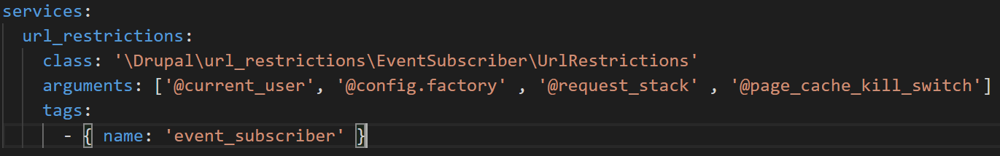
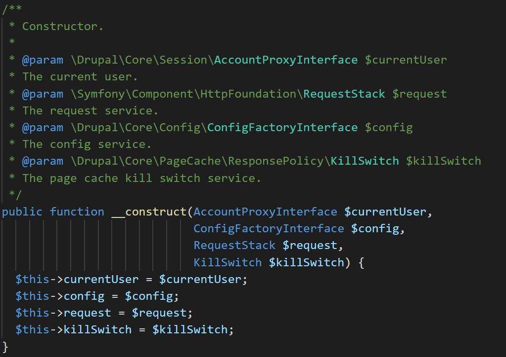

Url Redirect is an example contributed module for entity form.
Block layout is available in the Structure->Block layout. All the regions are listed in this page. We can assign the block by clicking the 'Place block' button.
Custom blocks will be available in Custom block library section.
We can manage the menu visibility settings based on menu level from the block configuration page in the 'MENU LEVELS' section.
Initial visibility level: The menu is only visible if the menu item for the current page is at this level or below it. Use level 1 to always display this menu.
Number of levels to display: This maximum number includes the initial level.
Expand all menu items: Override the option found on each menu link used for expanding children and instead display the whole menu tree as expanded.
A reference field is a field that represents a relationship between an entity and one or more other entities, which may belong to the same or different entity type. The three most commonly-used reference fields are:
Content reference: A reference to a content item. For example, you might want to connect recipes to the vendors who submitted them. You would set up a content reference field called Submitted by referencing Vendor content items on the Recipe content type.
Taxonomy term reference: A reference to a taxonomy term. For example, you might want to connect recipes to their ingredients. You would set up a taxonomy term reference field called Ingredients on the Recipe content type. This reference field will point to the vocabulary Ingredients.
User reference: A reference to a user account. For example, you might want to connect recipes with their chefs. You would set up a user reference field called Chefs on the Recipe content type.
In the Structure->Content types manage fields of any content type, click 'Add field' button.
In the reference section, Choose Content or Taxonomy and check the content type to create a reference.
Display modes (found at admin/structure/display-modes) exist to provide different presentations of Content Entities for either viewing or editing. The two types of display modes are "view modes" and "form modes".
Display mode is used to define which fields are shown and hidden in each view mode, and define how the fields are displayed in each view mode.
It is possible to create custom view modes and form modes.
Taxonomy is used to classify website content. One common example of taxonomy is the tags used to classify or categorize posts in a blog website; the farmers market website could use an ingredients taxonomy to classify recipes. Individual taxonomy items are known as terms (the blog tags or recipe ingredients in these examples); and a set of terms is known as a vocabulary (the set of all blog post tags, or the set of all recipe ingredients in these examples). Technically, taxonomy terms are an entity type and the entity subtypes are the vocabularies. Like other entities, taxonomy terms can have fields attached; for instance, you could set up an image field to contain an icon for each term.
An individual vocabulary can organize its terms in a hierarchy, or it could be flat. For example, blog tags normally have a flat structure, while a recipe ingredients vocabulary could be hierarchical (for example, tomatoes could be a sub-term of vegetables, and under tomatoes, you could have green and red tomatoes).
Taxonomy terms are normally attached as reference fields to other content entities to provide categorization of content.
Views are used to display the content in the different sytle with different format via Views UI.
Using the Views module, you can fetch content from the database of your site and present it to the user as lists, posts, galleries, tables, maps, graphs, menu items, blocks, reports, forum posts etc. Different content types including nodes, users, and other bundles can be displayed.
Views UI, a submodule within Views, provides a graphical interface underneath which lies a powerful SQL query builder that can access virtually any information in your database and display it in any format.
Different displays can present the query results as pages with fixed URLs on your site (or URLs accepting arguments), blocks, feeds, or panel panes.
Views is a highly flexible module to start with, but the contextual filters increase the use cases for the module by an order of magnitude. Contextual filters work similarly to regular filters, but there is one important difference. Instead of setting a filter value manually, the value is fetched from variables sent programmatically to the view. A regular filter could give you all nodes written by a specified user. A contextual filter for a node author would be able to display all nodes written by the currently viewed user, or the same user who wrote the currently viewed node. The concept is that contextual filters prepare a view for filtering, but the filter value is not yet determined. When the view is eventually called, it is also provided with data used to complete the contextual filters.
The classic example of how contextual filter values are provided to views is by the view path. If a view has the path example.com/my-view, the URL example.com/my-view/story/22 will call the view along with two values for contextual filters.
The configuration API provides a central place for modules to store configuration data. This data can be simple configuration like your site name, or more complex information managed with configuration entities, such as views and content types.
Configuration is a place to store information that you would want to synchronize from development to production. This information is often created during site building and is not typically generated by regular users during normal site operation.
Configuration management in D8 works similar to how Features module did in D7, but now ships out as part of core.
By default configuration data is stored in the config database table. The configuration management system built into core allows you to import and export these configuration settings across multiple environments and formats.